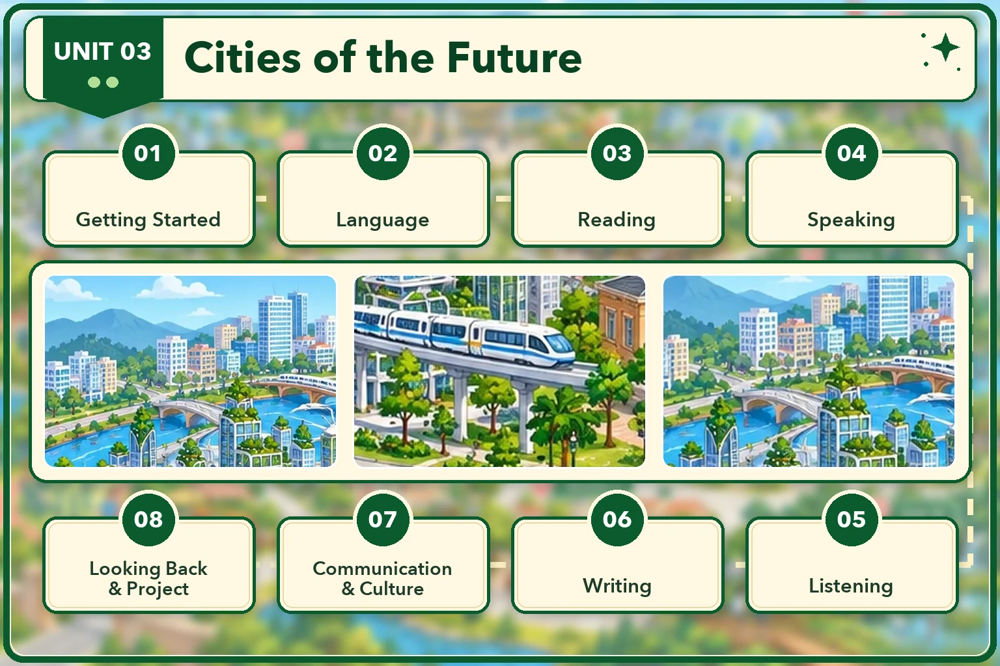

Lesson 1 · Getting started — An exhibition of future cities Lesson 2 · Language Lesson 3 · Reading: The characteristics of future cities Lesson 4 · Speaking: Discussing cities of the future Lesson 5 · Listening: The disadvantages of living in a smart city Lesson 6 · Writing: Advantages and disadvantages of living in a smart city Lesson 7 · Communication and Culture: Smart cities around the world Lesson 8 · Looking back and Project: A poster of the ideal city of the futureĐã dựng: Lesson 1, 2, 3, 4, 5, 6, 7, 8. Đủ cả 8 tiết. Dựng xong tiết nào thì mở khoá thẻ đó.